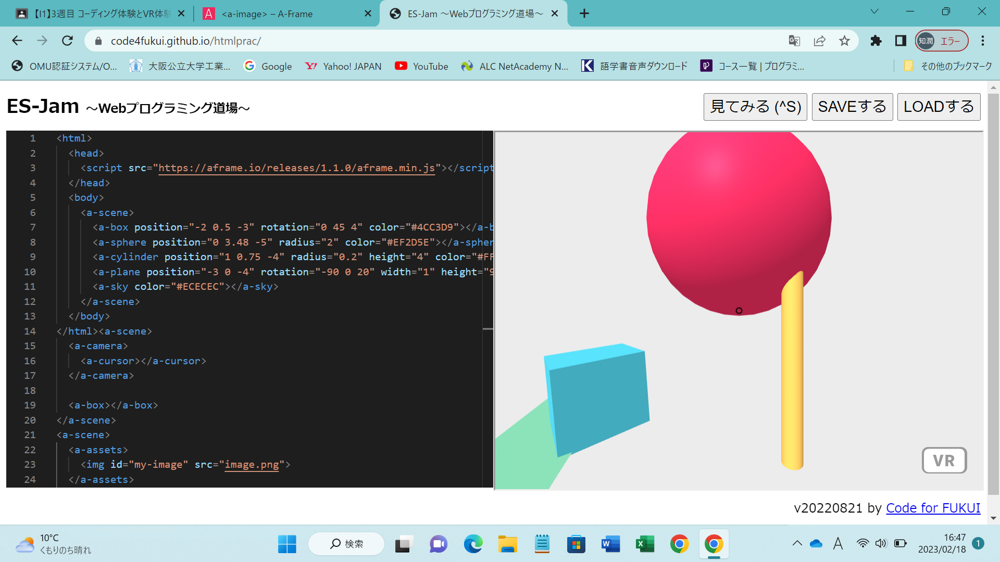

第3週目
3-1 JavaScript体験：VR空間を作る

vr空間
1.内容
webプログラミング道場で、3次元モデルをプログラミングした。Javascriptで、手順通りにプログラミングをした。
2.感想
もともとあったコードを少しいじるだけで、結果が変わるのが面白かった。
3-2 JavaScript体験：伝言プログラムを作る
伝言板
1.内容
Javascriptで、手順通りにプログラミングをした。伝言板に仕上げることができた。
2.感想
はじめは、少しプログラミングに抵抗があったけど、やってくるうちに慣れてきたので、どの言語をこれから習得していけばいいのかわからなくなった。
3-3 JavaScriptプログラムの３次元空間の体験
1.内容
vrゴーグルを装着して、球を３次元空間に投げ出した。仮想空間での会議をすることもできた。
2.感想
現実世界で、会議ができない人でも、仮想空間でなら、会議をすることができると思った。仮想空間というのを上手に活用することができたら、
ますます社会が便利になっていくだろうと考えた。